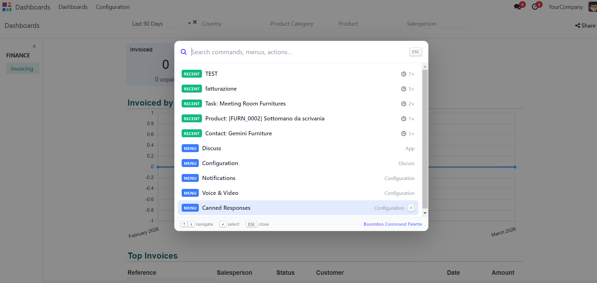
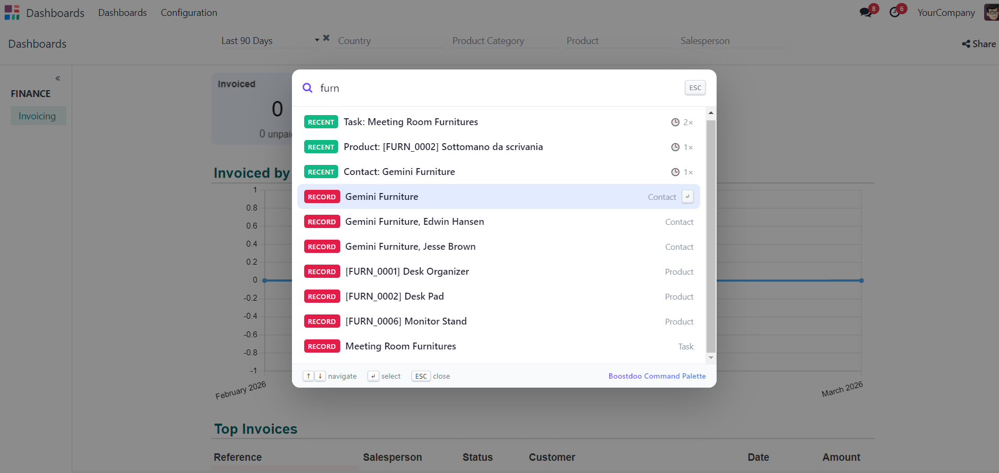
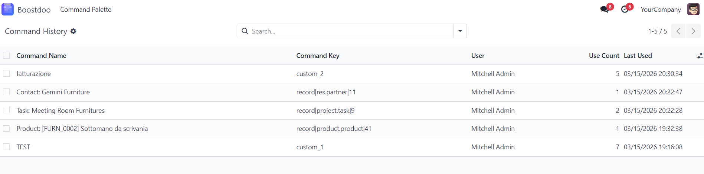
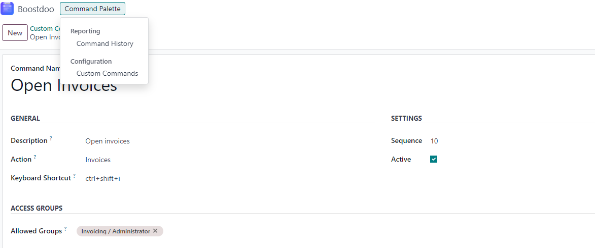

<div id="loempia_tabs_content" class="tab-content">
  <div class="tab-pane active" id="desc">
    <section class="oe_container" style="padding: 24px 0; background: #f8fafc; font-family: 'Segoe UI', Arial, sans-serif;">
      <div class="oe_row" style="max-width: 1120px; margin: 0 auto;">
        <div style="background: linear-gradient(135deg, #0f172a 0%, #1e3a8a 55%, #0891b2 100%); border-radius: 22px; padding: 52px 44px; color: #ffffff; box-shadow: 0 18px 36px rgba(15, 23, 42, 0.2);">
          <div style="display: inline-block; background: rgba(255,255,255,0.12); border: 1px solid rgba(255,255,255,0.28); border-radius: 999px; padding: 7px 16px; font-size: 13px; font-weight: 600; margin-bottom: 14px;">
            Odoo 18.0 • Productivity • Paid module
          </div>
          <h1 style="font-size: 44px; line-height: 1.12; font-weight: 800; margin: 0; color: #ffffff;">Boostdoo Command Palette</h1>
          <p style="font-size: 20px; line-height: 1.5; margin: 18px 0 0 0; max-width: 860px; color: #dbeafe;">
            Global keyboard command center for Odoo: open with Ctrl+K, search menus/actions/records, execute faster, reduce clicks.
          </p>
          <div style="margin-top: 18px; font-size: 15px; color: #bfdbfe;">
            ROI focus: faster navigation, better operator productivity, lower onboarding friction.
          </div>
        </div>
      </div>
    </section>

    <section class="oe_container" style="padding: 0 0 26px 0; background: #f8fafc;">
      <div class="oe_row" style="max-width: 1120px; margin: 0 auto;">
        <div style="display: flex; flex-wrap: wrap; gap: 16px; justify-content: center; margin-top: -26px;">
          <div style="min-width: 200px; background: #ffffff; border: 1px solid #dbe2ea; border-radius: 14px; text-align: center; padding: 16px 18px; box-shadow: 0 10px 20px rgba(15, 23, 42, 0.08);">
            <div style="font-size: 28px; font-weight: 800; color: #0f172a;">70%</div>
            <div style="font-size: 13px; color: #475569;">fewer navigation clicks</div>
          </div>
          <div style="min-width: 200px; background: #ffffff; border: 1px solid #dbe2ea; border-radius: 14px; text-align: center; padding: 16px 18px; box-shadow: 0 10px 20px rgba(15, 23, 42, 0.08);">
            <div style="font-size: 28px; font-weight: 800; color: #0f172a;">Ctrl+K</div>
            <div style="font-size: 13px; color: #475569;">global access shortcut</div>
          </div>
          <div style="min-width: 200px; background: #ffffff; border: 1px solid #dbe2ea; border-radius: 14px; text-align: center; padding: 16px 18px; box-shadow: 0 10px 20px rgba(15, 23, 42, 0.08);">
            <div style="font-size: 28px; font-weight: 800; color: #0f172a;">50+</div>
            <div style="font-size: 13px; color: #475569;">automated tests</div>
          </div>
          <div style="min-width: 200px; background: #ffffff; border: 1px solid #dbe2ea; border-radius: 14px; text-align: center; padding: 16px 18px; box-shadow: 0 10px 20px rgba(15, 23, 42, 0.08);">
            <div style="font-size: 28px; font-weight: 800; color: #0f172a;">ACL Safe</div>
            <div style="font-size: 13px; color: #475569;">native Odoo security</div>
          </div>
        </div>
      </div>
    </section>

    <section class="oe_container" style="padding: 28px 0; background: #f8fafc;">
      <div class="oe_row" style="max-width: 1120px; margin: 0 auto; background: #ffffff; border-radius: 18px; border: 1px solid #dbe2ea; box-shadow: 0 12px 30px rgba(15, 23, 42, 0.06); padding: 34px 34px 24px 34px;">
        <div class="oe_span12" style="padding: 0;">
          <h2 style="font-size: 30px; text-align: center; margin: 0 0 8px 0; color: #0f172a; font-weight: 800;">Why this module</h2>
          <p style="text-align: center; color: #475569; font-size: 16px; max-width: 900px; margin: 0 auto 26px auto; line-height: 1.7;">
            In large Odoo instances, menu depth slows operations. Boostdoo Command Palette gives every user one entry point to reach actions, menus and records in seconds.
          </p>
        </div>

        <div class="oe_span6" style="margin-bottom: 20px;">
          <div style="background: #fff7ed; border-left: 4px solid #ea580c; border-radius: 10px; padding: 16px 18px;">
            <h3 style="font-size: 21px; margin: 0 0 12px 0; color: #9a3412; font-weight: 700;">Common pain points</h3>
            <ul style="margin: 0; padding-left: 20px; line-height: 1.9; color: #7c2d12; font-size: 15px;">
              <li>Too many clicks to reach frequent actions</li>
              <li>Context switching between modules slows teams</li>
              <li>Difficult onboarding for new operators</li>
              <li>No keyboard-first workflow by default</li>
            </ul>
          </div>
        </div>

        <div class="oe_span6" style="margin-bottom: 20px;">
          <div style="background: #f0fdf4; border-left: 4px solid #16a34a; border-radius: 10px; padding: 16px 18px;">
            <h3 style="font-size: 21px; margin: 0 0 12px 0; color: #166534; font-weight: 700;">What you get</h3>
            <ul style="margin: 0; padding-left: 20px; line-height: 1.9; color: #14532d; font-size: 15px;">
              <li>Open command palette globally with Ctrl+K</li>
              <li>Fuzzy search across menus, actions, and records</li>
              <li>Favorites and history for recurrent workflows</li>
              <li>Custom admin commands with full permission checks</li>
            </ul>
          </div>
        </div>
      </div>
    </section>

    <section class="oe_container" style="padding: 18px 0 28px 0; background: #f8fafc;">
      <div class="oe_row" style="max-width: 1120px; margin: 0 auto; background: #ffffff; border-radius: 18px; border: 1px solid #dbe2ea; box-shadow: 0 12px 30px rgba(15, 23, 42, 0.06); padding: 30px 34px;">
        <h2 style="font-size: 28px; text-align: center; margin: 0 0 24px 0; color: #0f172a; font-weight: 800;">Key Features</h2>
        <div class="oe_span4" style="margin-bottom: 16px;">
          <div style="background: #eff6ff; border: 1px solid #bfdbfe; border-radius: 12px; padding: 16px; min-height: 145px;">
            <h4 style="margin: 0 0 6px 0; color: #1d4ed8; font-size: 18px;">Global Shortcut</h4>
            <p style="margin: 0; color: #1e3a8a; font-size: 14px; line-height: 1.7;">Call the palette from anywhere in backend with Ctrl+K and navigate without mouse dependency.</p>
          </div>
        </div>
        <div class="oe_span4" style="margin-bottom: 16px;">
          <div style="background: #ecfeff; border: 1px solid #a5f3fc; border-radius: 12px; padding: 16px; min-height: 145px;">
            <h4 style="margin: 0 0 6px 0; color: #0e7490; font-size: 18px;">Fuzzy Search Engine</h4>
            <p style="margin: 0; color: #155e75; font-size: 14px; line-height: 1.7;">Typo-tolerant matching for fast discovery of menus, actions and records even with partial input.</p>
          </div>
        </div>
        <div class="oe_span4" style="margin-bottom: 16px;">
          <div style="background: #f5f3ff; border: 1px solid #ddd6fe; border-radius: 12px; padding: 16px; min-height: 145px;">
            <h4 style="margin: 0 0 6px 0; color: #6d28d9; font-size: 18px;">Favorites + History</h4>
            <p style="margin: 0; color: #5b21b6; font-size: 14px; line-height: 1.7;">Bring recurrent commands to the top for each user and reduce repeated navigation effort.</p>
          </div>
        </div>
        <div class="oe_span4" style="margin-bottom: 16px;">
          <div style="background: #fffbeb; border: 1px solid #fde68a; border-radius: 12px; padding: 16px; min-height: 145px;">
            <h4 style="margin: 0 0 6px 0; color: #a16207; font-size: 18px;">Custom Commands</h4>
            <p style="margin: 0; color: #854d0e; font-size: 14px; line-height: 1.7;">Administrators can publish business shortcuts to trigger Odoo actions quickly and consistently.</p>
          </div>
        </div>
        <div class="oe_span4" style="margin-bottom: 16px;">
          <div style="background: #f0fdf4; border: 1px solid #bbf7d0; border-radius: 12px; padding: 16px; min-height: 145px;">
            <h4 style="margin: 0 0 6px 0; color: #166534; font-size: 18px;">Security by Design</h4>
            <p style="margin: 0; color: #14532d; font-size: 14px; line-height: 1.7;">Fully respects ACL, record rules and multi-company isolation. No permission bypass and no data leakage.</p>
          </div>
        </div>
        <div class="oe_span4" style="margin-bottom: 16px;">
          <div style="background: #f8fafc; border: 1px solid #cbd5e1; border-radius: 12px; padding: 16px; min-height: 145px;">
            <h4 style="margin: 0 0 6px 0; color: #0f172a; font-size: 18px;">Native Odoo 18 Stack</h4>
            <p style="margin: 0; color: #334155; font-size: 14px; line-height: 1.7;">Implemented with OWL and standard Odoo components, without external frontend dependencies.</p>
          </div>
        </div>
      </div>
    </section>

    <section class="oe_container" style="padding: 18px 0 28px 0; background: #f8fafc;">
      <div class="oe_row" style="max-width: 1120px; margin: 0 auto; background: #ffffff; border-radius: 18px; border: 1px solid #dbe2ea; box-shadow: 0 12px 30px rgba(15, 23, 42, 0.06); padding: 30px 34px;">
        <h2 style="font-size: 28px; text-align: center; margin: 0 0 10px 0; color: #0f172a; font-weight: 800;">Screenshots</h2>
        <p style="text-align: center; color: #475569; margin: 0 0 24px 0; font-size: 15px;">
          Real backend views of Boostdoo Command Palette in production context.
        </p>

        <div class="oe_span6" style="margin-bottom: 20px;">
          <div style="background: #f8fafc; border: 1px solid #dbe2ea; border-radius: 12px; overflow: hidden;">
            
            <div style="padding: 10px 12px; font-size: 13px; color: #334155;">Screenshot 1: Command palette open with results.</div>
          </div>
        </div>

        <div class="oe_span6" style="margin-bottom: 20px;">
          <div style="background: #f8fafc; border: 1px solid #dbe2ea; border-radius: 12px; overflow: hidden;">
            
            <div style="padding: 10px 12px; font-size: 13px; color: #334155;">Screenshot 2: Search and command matching details.</div>
          </div>
        </div>

        <div class="oe_span6" style="margin-bottom: 20px;">
          <div style="background: #f8fafc; border: 1px solid #dbe2ea; border-radius: 12px; overflow: hidden;">
            
            <div style="padding: 10px 12px; font-size: 13px; color: #334155;">Screenshot 3: Favorites and recent commands workflow.</div>
          </div>
        </div>

        <div class="oe_span6" style="margin-bottom: 20px;">
          <div style="background: #f8fafc; border: 1px solid #dbe2ea; border-radius: 12px; overflow: hidden;">
            
            <div style="padding: 10px 12px; font-size: 13px; color: #334155;">Screenshot 4: Admin custom commands configuration.</div>
          </div>
        </div>
      </div>
    </section>

    <section class="oe_container" style="padding: 14px 0 32px 0; background: #f8fafc;">
      <div class="oe_row" style="max-width: 1120px; margin: 0 auto; background: #0f172a; border-radius: 18px; padding: 30px 34px; color: #e2e8f0; box-shadow: 0 12px 30px rgba(15, 23, 42, 0.18);">
        <div class="oe_span6" style="margin-bottom: 12px;">
          <h3 style="margin: 0 0 10px 0; color: #ffffff; font-size: 23px; font-weight: 700;">Technical Specifications</h3>
          <ul style="margin: 0; padding-left: 18px; line-height: 1.9; font-size: 14px; color: #cbd5e1;">
            <li>Version: 18.0.1.0.0</li>
            <li>Odoo: 18.0 Community / Enterprise / Odoo.sh</li>
            <li>License: LGPL-3</li>
            <li>Dependencies: base, web</li>
            <li>Stack: OWL native Odoo 18</li>
          </ul>
        </div>
        <div class="oe_span6" style="margin-bottom: 12px;">
          <h3 style="margin: 0 0 10px 0; color: #ffffff; font-size: 23px; font-weight: 700;">Support</h3>
          <ul style="margin: 0; padding-left: 18px; line-height: 1.9; font-size: 14px; color: #cbd5e1;">
            <li>Email support:  boostdoo.dev@gmail.com</li>
            <li>Continuous updates for Odoo 18.x</li>
            <li>Structured, maintainable, and secure implementation</li>
          </ul>
        </div>
      </div>
    </section>
  </div>
</div>
